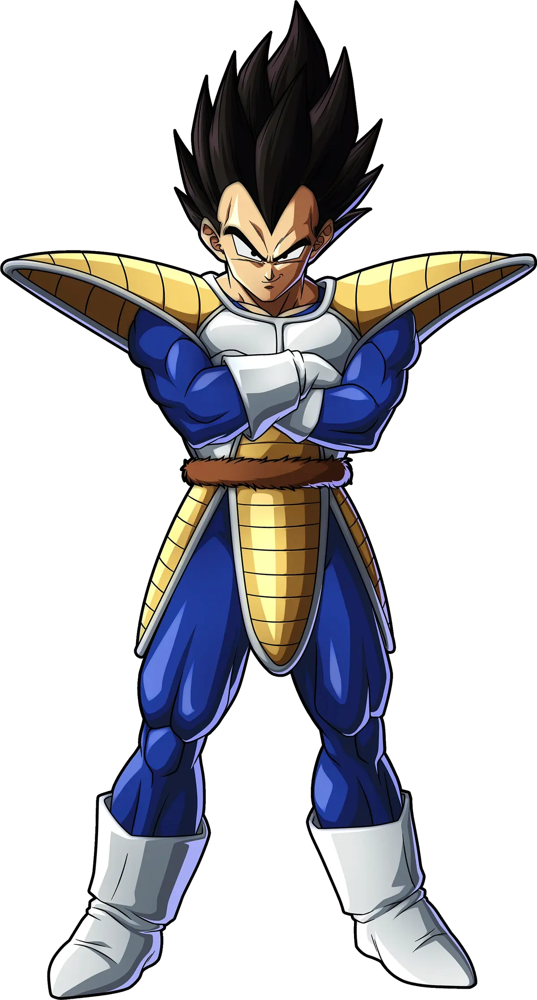
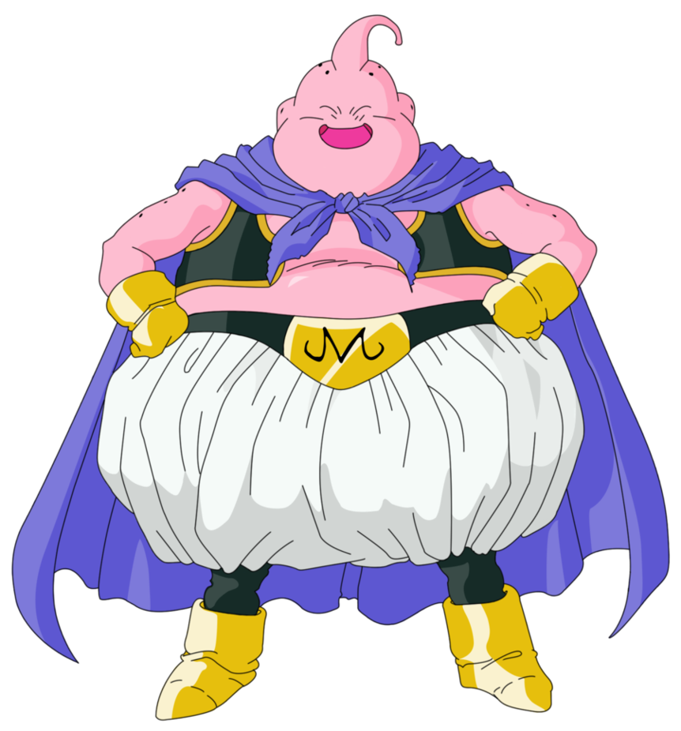

Dragon Ball Z
Dragon Ball Z foi uma série de animação produzida pela Toei Animation. Baseada na série de mangá Dragon Ball escrita por Akira Toriyama, Dragon Ball Z corresponde aos volumes 17 ao 42 do mangá que foi publicado na revista, Weekly Shonen Jump, de 1988 a 1995, e estreou no Japão na Fuji TV em 26 de abril de 1989, e terminou dia 31 de janeiro de 1996 com o total de 291 episódios,antes de ser dublada em diversos territórios ao redor do mundo, incluindo Estados Unidos, Austrália, Europa, Índia e América Latina.
A série já foi exibida em mais de 80 países ao redor do mundo.O sucesso da série Dragon Ball levou à criação da continuação, Dragon Ball Z, sendo um dos animes mais conhecidos de todos os tempos. Esta série aparece recheada de longos combates com muita ação.Em Dragon Ball Z, as histórias possuem um clima mais sério que as de seu antecessor. Substituíram a comédia, mas o humor ainda existe em muitas partes da série. Possui vários episódios em que o suspense é entrelaçado aos acontecimentos que primeiramente não parecem ter grande relevância, ou de fatos despercebidos e revelados com maiores detalhes no auge de tal acontecimento
Personagens
Son Goku, cujo nome de nascimento é Kakarotto, é o protagonista da franquia Dragon Ball, criada por Akira Toriyama. Sua primeira aparição ocorreu no primeiro capítulo do mangá Dragon Ball, intitulado Bulma e Son Goku, publicado na revista Weekly Shōnen Jump em 3 de dezembro de 1984. Goku é inspirado num personagem com o mesmo nome, personagem principal do romance chinês Jornada ao Oeste. Porém, Toriyama mudou algumas de suas características para ser mais original. Goku é apresentado como um menino estranho, com rabo de macaco e força sobre-humana. Conforme a história se desenrola, é revelado que ele descende de uma raça fictícia chamada Saiyajins, uma das raças mais poderosas do universo.

Vegeta, o Príncipe dos Saiyajins é um dos principais personagens do mangá de Dragon Ball. Ele é o príncipe da raça dos Saiyajins e o maior rival de Goku/Kakaroto, pelo fato de Vegeta não aceitar que um saiyajin de classe baixa como ele seja mais poderoso que o príncipe da raça.Inicialmente, o personagem foi apresentado como um vilão que queria invadir a Terra para usar as esferas do dragão com a finalidade de se tornar um imortal. Porém, com o tempo, seu coração foi cada vez mais abrandando e ele se tornou uma pessoa de bom coração, com uma família e amigos.
Piccolo é a reencarnação Namekuseijin e filho final de Piccolo Daimaoh e também o vilão final no anime Dragon Ball, e um protagonista em Dragon Ball Z, Dragon Ball GT, e Dragon Ball Super. De acordo com o Grande Patriarca, Piccolo assim como Kami-Sama e Piccolo Daimaoh, são parte do Clã Dragão, que são os criadores originais das Esferas do Dragão.Um sábio e inteligente estrategista que era originalmente um inimigo de Goku, Piccolo vira um membro permanente dos Guerreiros Z, especialmente após ele formar um laço próximo com o filho de Goku, Gohan, quando estavam treinando em preparação para a chegada de Nappa e Vegeta.
Freeza é um dos vilões mais significativos no mangá Dragon Ball e nos animes Dragon Ball Z e Dragon Ball Super. Ele também faz aparições em vários filmes de Dragon Ball, e também em alguns episódios de Dragon Ball GT. Freeza é um Imperador Galáctico que dirige o Exército Galáctico de Freeza, temido por sua crueldade e poder. Ele é descendente de Chilled, filho do Rei Cold, irmão mais novo de Coola, e pai de Kuriza. Seu nome é um trocadilho da palavra "freezer".
Bulma desempenha o papel de apoio ao protagonista Goku, no mangá Dragon Ball e nos animes Dragon Ball, Z, GT, e Super, filha do Dr. Brief e Sra. Brief, ex-namorada de Yamcha, mais tarde se torna esposa de Vegeta e mãe de seus dois filhos Trunks e Bra. Bulma é a personagem feminina mais importante da série, sendo responsável por duas invenções relevantes para o anime como o radar do dragão e a Máquina do Tempo, e tendo participação contínua do primeiro episódio até o último

Majin Boo, depois conhecido como Mr. Boo, é a primeira forma de Boo que apareceu na série Dragon Ball. Majin Boo tem várias formas, todas estão mostradas abaixo, e todas as formas são simplesmente referidas como "Majin Boo" na série, mas as formas variadas têm nomes diferentes nos videogames.
Son Gohan, também conhecido apenas como Gohan, é um personagem fictício da franquia Dragon Ball criada por Akira Toriyama. Ele aparece na segunda parte do mangá, que corresponde ao anime Dragon Ball Z. Gohan é filho do protagonista Goku com sua esposa Chi-Chi e o primeiro híbrido entre humano e Saiyajin mostrado na série. Um tema recorrente na série é o grande poder oculto de Gohan, que aos poucos é liberado.
Trunks é um protagonista do manga Dragon Ball e dos animes Dragon Ball Z, Dragon Ball GT, e Dragon Ball Super. Ele é o filho de Bulma e Vegeta, e mais tarde o irmão mais velho de Bra. Ele também é chamado de Kid Trunks, para diferenciar de seu equivalente do futuro alternativo.
Chi-Chi é a filha do Boi-Rei, que mais tarde se casa com Goku e se torna a mãe amorosa de Gohan e Goten. Ela foi introduzida pela primeira vez como uma menina tímida e com medo, mas depois, enquanto ela fica mais velha, desenvolve uma personalidade muito moleca, duro e feroz, que às vezes faz com que ela tem explosões de raiva visto várias vezes ao longo da série. Apesar disso, ela demonstrou seu amor por Goku e seus filhos muitas vezes ao longo da série.
Cell é um dos principais supervilões que vem da linha do tempo alternativa no manga Dragon Ball e no anime Dragon Ball Z. Ele é a final criação de Dr. Gero, designado para ter todas as habilidades dos melhores lutadores que já habitaram ou visitaram a Terra; o resultado é um "guerreiro perfeito", que possui numerosos traços genéticos e habilidades especiais. Cell é um dos poucos Androides Red Ribbon não completados diretamente por Dr. Gero, os outros são Androide 13, Androide 14, Androide 15 e possivelmente Androide 8. A finalização de Cell, Androide 13, Androide 14 e Androide 15 involvem o Super Computador do Dr. Gero.
Androide 18, Lazuli quando ela era Humana é uma personagem no manga Dragon Ball, e nos animes Dragon Ball Z e Dragon Ball GT. Ela é a décima oitava criação androide de Dr. Gero, designada para cumprir a vingança contra Goku. Enquanto seus interesses inicialmente desviam dessa expectativa, a curiosidade dela de ativar Androide 16, embora Gero havia ordenado não fazê-lo, leva Androide 17 a matá-lo. Androide 18 depois vira a esposa de Kuririn e mãe de sua única filha, Marron. Ela também entra não oficialmente nos Guerreiros Z. Embora ela não participe de nenhuma luta contra Majin Boo, ela luta junto com os Guerreiros Z contra Beerus em Dragon Ball Z: A Batalha dos Deuses e ajuda a lutar contra Super 17 em Dragon Ball GT.
Kuririn é um protagonista em Dragon Ball. Kuririn teve uma breve rivalidade com Goku quando se conheceram e treinaram com Mestre Kame, mas eles logo viraram melhores amigos. Um dos mais poderosos e talentosos Terráqueos, Kuririn é corajoso, um aliado fiel e bom. Ele é um Guerreiro Z prominente, embora seja sempre dominado pelos inimigos. Sua baixa estatura e carequice (com a exceção de quando ele deixa seu cabelo crescer na saga Majin Boo) ajudam a criar alívio cômico durante momentos tensos. Durante a metade final de Dragon Ball Z, ele se aposenta das lutas, optando a estabelecer-se com sua família, sendo o esposo de Androide 18 e pai de Marron.
Son Goten é um personagem fictício da franquia Dragon Ball. Ele marcou sua estréia em 4 de novembro de 1993 no capítulo de número 425, Eles sabem!!. No mangá, Goten é o segundo filho do protagonista Son Goku e melhor amigo de Trunks. Para proteger o planeta Terra os dois garotos aprendem a se fundir em um único guerreiro chamado Gotenks.
Shenlong pode ser chamado após juntar todas as sete Esferas do Dragão da Terra. Shenlong pode realizar qualquer desejo a não ser que ele exceda o poder de seu criador, que deve estar vivo (Kami-Sama/Piccolo ou Dende). De acordo com Goku, Shenlong não pode (ou não vai) realizar o mesmo desejo duas vezes. As Esferas do Dragão não podem ser usadas após um ano depois do desejo ser feito, pois elas se transformam em pedra. As Esferas do Dragão da Terra são relativamente pequenas, do tamanho de uma laranja grande. O Shenlong das Esferas do Dragão de Estrelas Negras é vermelho, ao contrário do Shenlong da Terra que é verde. Diferente de Porunga, Shenlong só pode realizar um desejo por vez, até que Dende o melhore para realizar três desejos (dois se muitas pessoas forem revividas).

Mestre Kame é um antigo e sábio mestre de artes marciais, e o primeiro personagem a usar o conhecido Kamehameha. Embora ele pareça frágil, Kame é na verdade um guerreiro poderoso. Ele treinou Vovô Gohan, Rei Cutelo, Goku, Kuririn e Yamcha. Mestre Kame é ambos os arquétipos velho sábio e velho pervertido, o último sendo típico de mangas "shonen". Às vezes, ele fica irritado, e produz alívio cômico. Seus companheiros são geralmente Oolong, Tartaruga, e Launch. Sua casa é a Casa do Kame, uma casa numa ilha isolada que serve como local de encontro para seus amigo
Programing By ©MatheusinPleys